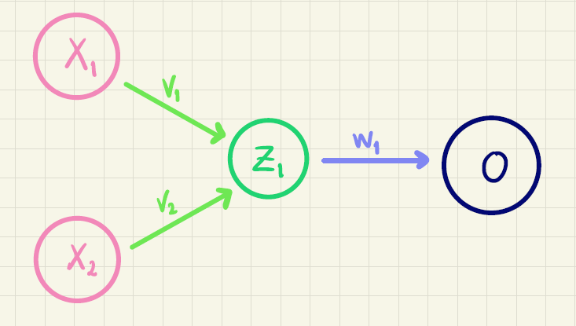
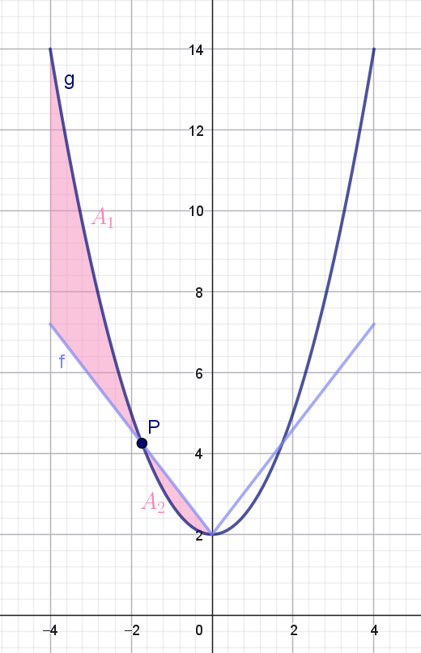

Kan du bygge funktioner med ReLU?
Formål
I opbygningen af kunstige neurale netværk er aktiveringsfunktioner helt centrale. Hvis ikke man bruger aktiveringsfunktioner i et kunstigt neuralt netværk, ender man i praksis med blot at bygge en stor lineær funktion af inputværdierne. Og verden er sjældent lineær – derfor har man brug for aktiveringsfunktioner.
En ofte anvendt aktiveringsfunktion i de skjulte lag er ReLU-funktionen. Den er næsten lineær, men alligevel slet ikke. I dette forløb skal vi se på, hvordan man kan sammensætte ReLU-funktioner og på den måde modellere ikke-lineære funktioner.
Introduktion
Start med at se denne video, hvor vi kort forklarer, hvad kunstig intelligens handler om:
Når man træner kunstig intelligens opbygger man, lidt forsimplet, bare en kæmpestor sammensat funktion! Når funktioner sammensættes i neurale netværk, bruger man en klasse af funktioner, som kaldes for aktiveringsfunktioner.
Vi vil illustrere det med et simpelt eksempel, som kaldes for et kunstigt neuralt netværk med ét skjult lag. Det kan tegnes sådan her:

Alle pilene i figur 1 kaldes for vægte. I netværket her, er der overordnet set \(v\)-, \(u\)- og \(w\)-vægte.
Idéen er, at man beregner en outputværdi \(o\) baseret på to inputvariable (eller features) kaldet for \(x_1\) og \(x_2\). Det foregår på følgende måde:
Ved hjælp af inputvariablene og \(v\)-vægtene (de lysegrønne pile på figur 1) beregner vi \(z_1\):
\[ z_1 = f(v_0 + v_1 \cdot x_1 + v_2 \cdot x_2) \tag{1}\]
Her er \(f\) et eksempel på en aktiveringsfunktion, og det er den, vi skal se nærmere på i det følgende.
På tilsvarende vis udregner vi \(z_2\) ved at bruge \(u\)-vægtene (de mørkegrønne pile på figur 1):
\[ z_2 = f(u_0 + u_1 \cdot x_1 + u_2 \cdot x_2) \tag{2}\]
Når vi nu har \(z_1\) og \(z_2\) kan outputværdien \(o\) for eksempel beregnes på denne måde (her er \(w\)-vægtene vist som de lyseblå pile på figur 1):
\[ o = w_0 + w_1 \cdot z_1 + w_2 \cdot z_2 \]
Nogle gange bruger man også en aktiveringsfunktion, når outputværdien \(o\) skal beregnes. Det vender vi kort tilbage til i opgave 2.
Den første opgave handler om, at hvis man kun sammensætter lineære funktioner, så får man kun nye lineære funktioner. Opgaven kan eventuelt springes over – spørg din lærer.
Sigmoid
En anden aktiveringsfunktion, som ofte bruges, hvis outputværdien \(o\) skal kunne fortolkes som en sandsynlighed, er sigmoid-funktionen \(\sigma\) med forskrift:
\[ \sigma (x) = \frac{1}{1+\textrm{e}^{-x}} \]
hvor outputværdien \(o\) så beregnes på denne måde:
\[ o = \sigma(w_0 + w_1 \cdot z_1 + w_2 \cdot z_2) \]
ReLU
I de skjulte lag i et neuralt netværk kan man godt bruge sigmoid-funktionen som aktiveringsfunktion. Det har bare vist sig, at den ikke altid er super god! Det er til gengæld ReLU-funktionen, som er omdrejningspunktet for resten af opgaverne.
ReLU-funktionen1 er defineret således:
1 ReLU står for Rectified Linear Unit.
\[ \textrm{ReLU}(x) = \begin{cases} 0 & \textrm {hvis } x \leq 0 \\ x & \textrm {hvis } x > 0 \end{cases} \]
Vi har lige set, at
\[ \textrm{ReLU}'(x) = \begin{cases} 0 & \textrm{hvis } x < 0 \\ 1 & \textrm{hvis } x > 0 \end{cases} \tag{3}\]
Og vi har opdaget, at ReLU-funktionen ikke er differentiabel i \(x=0\), fordi grafen har et knæk her. Det er selvfølgelig uheldigt, når man skal implementere et kunstigt neuralt netværk. Heldigvis vil det utrolig sjældent ske, at inputværdien til ReLU er præcis \(0\), og hvis det alligevel sker, så vil vi vælge at sætte tangenthældningen i \(0\) til at være \(0\).
Vi prøver nu at sætte ReLU-funktioner sammen med lineære funktioner. Hvad det har at gøre med kunstige neurale netværk kommer vi tilbage til i det næste afsnit.
For at holde tingene simple ser vi på det tilfælde, hvor vi har én inputvariabel, som vi bare vil kalde for \(x\).
Sammenhæng med kunstigt neuralt netværk
Vi kan nu passende spørge os selv, hvad ReLU-funktionen i opgave 4 og 5 har at gøre med et kunstigt neuralt netværk. En hel del faktisk!
Betragt følgende netværk, hvor det skjute lag kun består af én neuron:

Beregner vi \(z_1\) ved at bruge ReLU-funktionen som aktiveringsfunktion, får vi
\[ z_1 = \textrm{ReLU}(v_0 + \underbrace{v_1 \cdot x_1 + v_2 \cdot x_2}_{x}) = \textrm{ReLU}(v_0 + x), \] hvor vi har sagt, at \(x\) bare er en linear kombinationen af de to features: \(x=v_1 \cdot x_1 + v_2 \cdot x_2\). Så er outputværdien \(o\):
\[ o = w_0 + w_1 \cdot z_1 = w_0 + w_1 \cdot \textrm{ReLU}(v_0 + x), \]
som præcis svarer til den funktion, som vi har set på i opgave 4 og 5.
I de næste opgaver skal vi se på, hvad der sker, hvis vi sætter flere ReLU-funktioner sammen.
Funktionen \(f\) fra ovenstående opgave svarer næsten til det netværk, som vi har illustreret i figur 1. Men vi har lavet en forsimpling i opgaven. Skulle vi modellere netværket i figur 1, skulle vi have set på funktionen
\[ \begin{aligned} f(x_1,x_2)=w_0 &+ w_1 \cdot \textrm{ReLU}(v_0 + \underbrace{v_1 \cdot x_1 + v_2 \cdot x_2}_{x}) \\ &+ w_2 \cdot \textrm{ReLU}(u_0 + \underbrace{u_1 \cdot x_1 + u_2 \cdot x_2}_{\textrm{noget andet end } x}) \end{aligned} \]
Som det fremgår af ovenstående, kan vi ikke bare tænke på \(f\) som en funktion af én variabel \(x\), men den forsimplede funktion fra opgave 6 er glimrende til at forstå, hvordan sammensætninger af ReLU-funktioner kan bruges til at modellere ikke-lineære funktioner.
Modellering af ikke-lineære sammenhænge
Pointen med at sammensætte ReLU-funktioner er, at vi gerne vil kunne modellere ikke-lineære sammenhænge i data. De næste opgaver går ud på at bestemme en sammensat ReLU-funktion, som kan bruges til at modellere en parabel.
Da grafen for både \(f\) og \(g\) er symmetriske omkring \(y\)-aksen i intervallet \([-4,4]\) vil vi i det følgende nøjes med at se på de to grafer i intervallet \([-4,0]\).
I opgave 9 kan du se, at grafen for \(f\) og \(g\) skærer hinanden én gang i intervallet \(]-4,0[\). Og ændrer du på værdien af \(w_1\), så flytter skæringspunktet sig.
En idé til at bestemme den værdi af \(w_1\), som giver en god approksimation, vil være at bestemme den værdi, som minimerer arealet af det område, som grafen for \(f\) og \(g\) afgrænser i \([-4,0]\). Dette er illustreret i figuren herunder:

Hvis vi kalder skæringspunktet \(P\)’s førstekoordinat for \(x_1\), kan vi se, at i intervallet \([-4,x_1]\) ligger grafen for \(g\) over grafen for \(f\). Det vil sige, at arealet \(A_1\) af det område, som de to grafer afgrænser i dette interval, er:
\[ A_1 = \int_{-4}^{x_1} g(x)-f(x) \, dx \] Omvendt ligger grafen for \(f\) over grafen for \(g\) i intervallet \([x_1,0]\) og arealet \(A_2\) af det område, som de to grafer afgrænser her, er:
\[ A_2 = \int_{x_1}^{0} f(x)-g(x) \, dx \]
En idé kunne derfor være, at bestemme \(w_1\) så det samlede areal
\[ A_1 + A_2 = \int_{-4}^{x_1} g(x)-f(x) \, dx + \int_{x_1}^{0} f(x)-g(x) \, dx \]
bliver så lille som mulig.
Det sidste afsnit her er valgfrit – spørg din lærer, om du skal springe det over!
Andre muligheder
I opgave 13 fandt du den værdi af \(w_1\), som minimerer arealet
\[ A_1 + A_2 = \int_{-4}^{x_1} g(x)-f(x) \, dx + \int_{x_1}^{0} f(x)-g(x) \, dx \tag{4}\]
Vi minder lige om, at den numeriske værdi af et tal fjerner eventuelle negative fortegn. For eksempel er
\[ |7| = 7 \quad \quad \textrm{og} \quad \quad |-7| = 7. \]
Det betyder, at vi kan omskrive udtrykket i (4) til
\[ A_1 + A_2 = \int_{-4}^{x_1} |f(x)-g(x)| \, dx + \int_{x_1}^{0} |f(x)-g(x)| \, dx \]
og bruger vi indskudsreglen for bestemte integraler, ser vi, at
\[ A_1 + A_2 = \int_{-4}^{0} |f(x)-g(x)| \, dx \] Husk på, at enhver kontinuert funktion har en stamfunktion, så selvom integraden \(|f(x)-g(x)|\) måske ikke er differentiabel, så er det altså nok, at den er kontinuert.
I opgaven 13 fandt du så faktisk den værdi af \(w_1\), som minimerer
\[ \int_{-4}^{0} |f(x)-g(x)| \, dx \]
En anden måde at fjerne negative fortegn er ved at opløfte i anden. Så en anden idé kunne være, at bestemme \(w_1\) så
\[ \int_{-4}^{0} \left (f(x)-g(x) \right )^2 \, dx \]
minimeres.
Faktisk kan man vise, at man kan approksimere enhver kontinuert funktion defineret på et begrænset interval med et neuralt netværk med ét skjult lag inden for en vilkårlig lille fejlmargin.